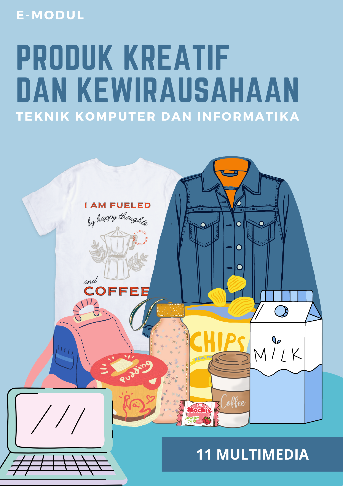

Hallo, Selamat datang di kelas XI Multimedia
Produk Kreatif dan Kewirausahaan
Untuk melihat materi dalam versi flipbook
Kamu dapat mengakses flipbook di bawah sini.
Website ini dibuat untuk mempermudah siswa dalam mengakses materi
Materi tersedia dalam tutorial video pembelajaran.
Mengumpulkan Project
Siswa dapat mengumpulkan tugas pada menu Google Drive.
Time Tracker
Time Tracker dibuat untuk melihat proses siswa dalam mengerjakan project.